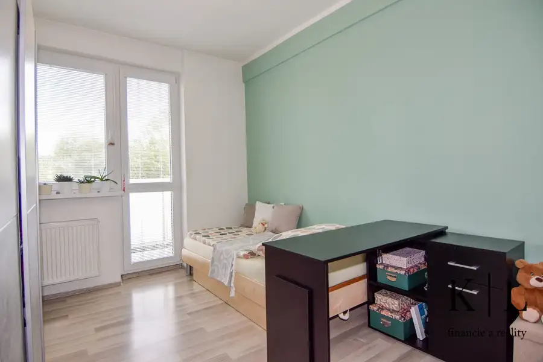
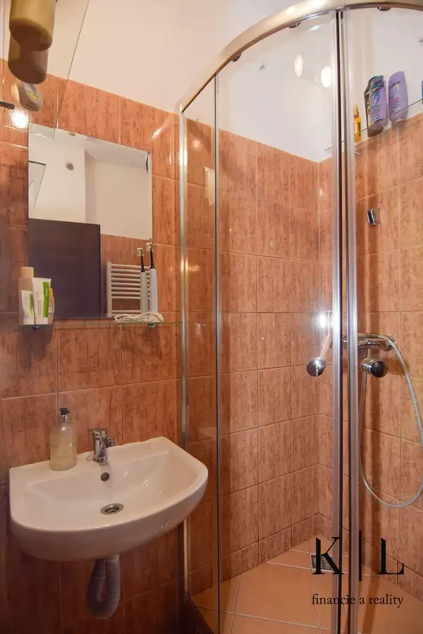
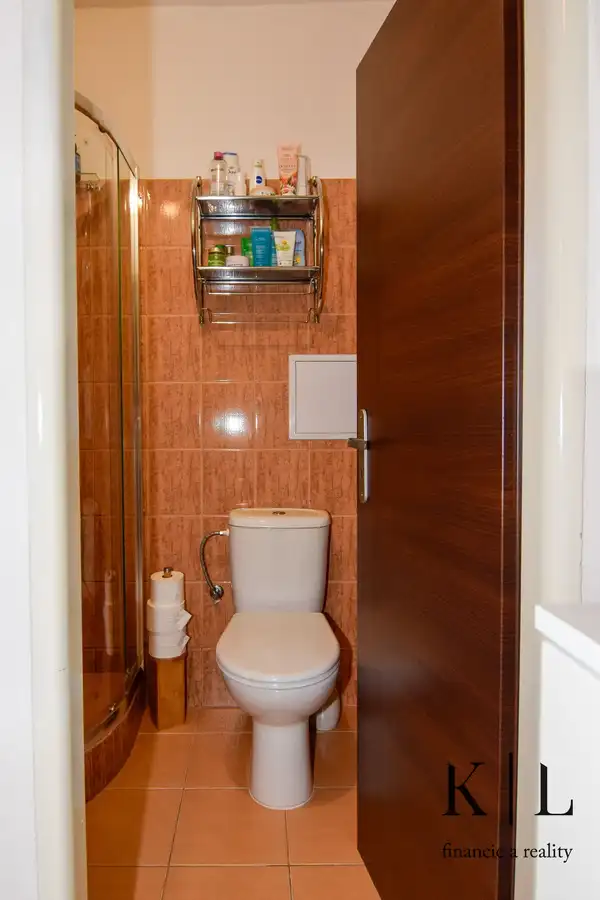
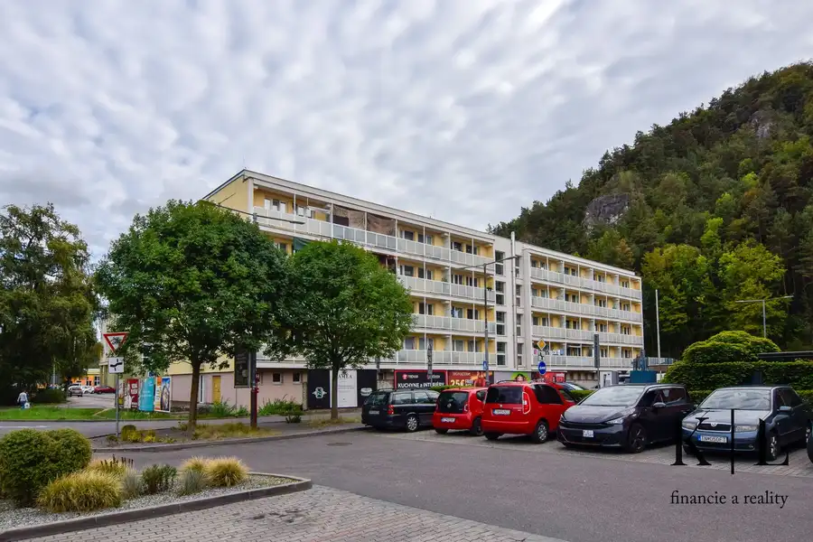

IBA U NÁS!! Na predaj zrekonštruovaný zariadený 2-izbový, Trenčín, ul. Pod Sokolice
Trenčín




- Dispozícia2-izbový
- Plocha32 m²
- Poschodie4. z 4
- StavKompletná rekonštrukcia
O nehnuteľnosti
K | L financie a reality ponúka na predaj menší 2-izbový byt, ktorý sa nachádza priamo v blízkosti OC MAX, OC CITY PARK, v blízkosti centra mesta a priamo pod lesoparkom Brezina, na ulici Pod Sokolice v Trenčíne. Byt o výmere 32 m2 + murovaná pivnica 2 m2 + balkón 5,60 m2 sa nachádza na 4. najvyššom nadzemnom podlaží tehlového bytového domu.Bytový dom prešiel v roku 2024 kompletnou rekonštrukciou (zateplenie, fasáda, nová strecha, nové balkóny, rekonštrukcia spoločných priestorov, nový plynový kotol).Dispozícia bytu:-predsieň (2,66 m2)-obývacia izba s kuchynským kútom (16,10 m2)-izba (10,68 m2)-kúpeľňa s umývadlom a WC (2,48 m2)-balkón prístupný z obidvoch izieb (5,60 m2)Vybavenie bytu: -kuchynská linka s elektrickým sporákom, kombinovaná chladnička-v kúpeľni sprchový kút, umývadlo + WC -šatníková skriňa v obývačke a skriňa v izbe-elektrický vrátnik-optický internetByt prešiel v roku 2015 rekonštrukciou (nové plastové okná s balkónovými dverami, podlahy, kuchynská linka, nová kúpeľňa, radiátory). Byt sa predáva kompletne zariadený, tak ako je na fotkách.Mesačné náklady na bývanie sú cca 170,- EUR / dve osoby.Orientácia bytu: JV.Predajná cena: 99.500,- EURBytový dom sa nachádza vo vyhľadávanej lokalite Trenčína, cca 10 min. peši do centra mesta, pod Lesoparkom Brezina. V priamej blízkosti sa nachádzajú obchody a služby (OC MAX, OC CITY PARK, Kaufland).Predajná cena zahŕňa: finančné a právne poradenstvo, t. j. vypracovanie zmluvnej dokumentácie, zabezpečenie návrhu na vklad na príslušnom katastri, vrátane uhradenia správneho poplatku, hypotekárne poradenstvo a províziu realitnej kancelárieInformácie:Ing. Katarína Kanderkovatel.: 0901 777 993e-mail: kanderkova@klfinancie.skwww.klfinancie.skwww.facebook.com/klfinancie
Parametre
- Cena vrátane energií
- Nie
- Druh
- 2 izbový byt
- Dátum zverejnenia
- 25. 09. 2026
- Energetický certifikát budovy
- V príprave
- Orientácia
- Juhovýchodná
- Podlažie
- 4
- Počet balkónov
- 1
- Počet izieb / miestností
- 2
- Počet nadzemných podlaží
- 4
- Počet pivníc
- 1
- Rok poslednej rekonštrukcie
- 2015
- Rok výstavby
- 1969
- Stav nehnuteľnosti
- Kompletná rekonštrukcia
- Telekomunikácie
- Internet, Optická sieť
- Typ
- Predaj
- Typ konštrukcie
- Tehlová
- Umiestnenie
- Posledné podlažie
- Vybavenie
- Balkón, Pivnica
- Úžitková plocha
- 32 m²